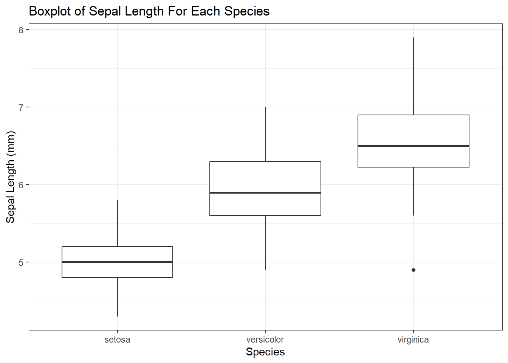
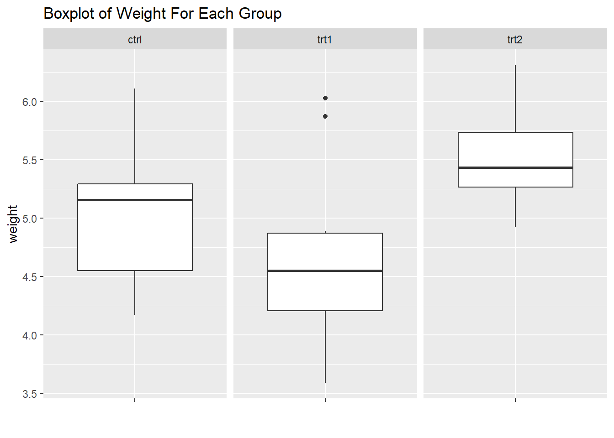
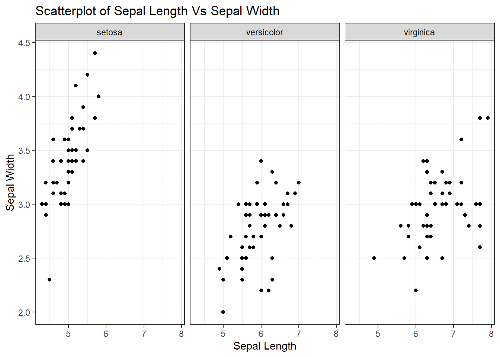
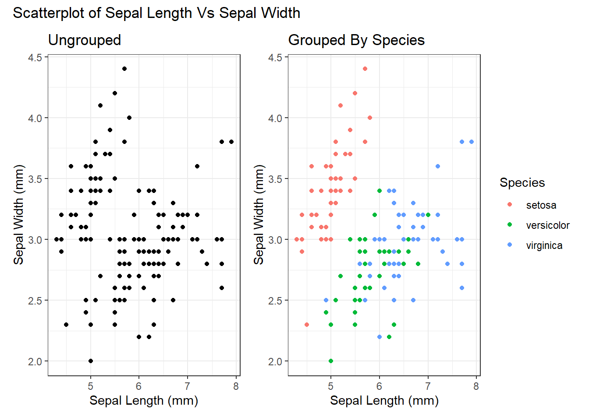
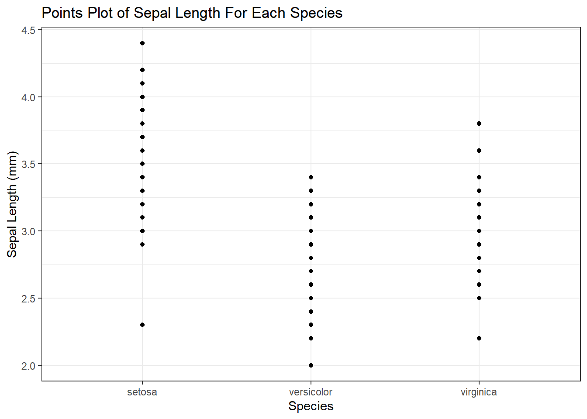
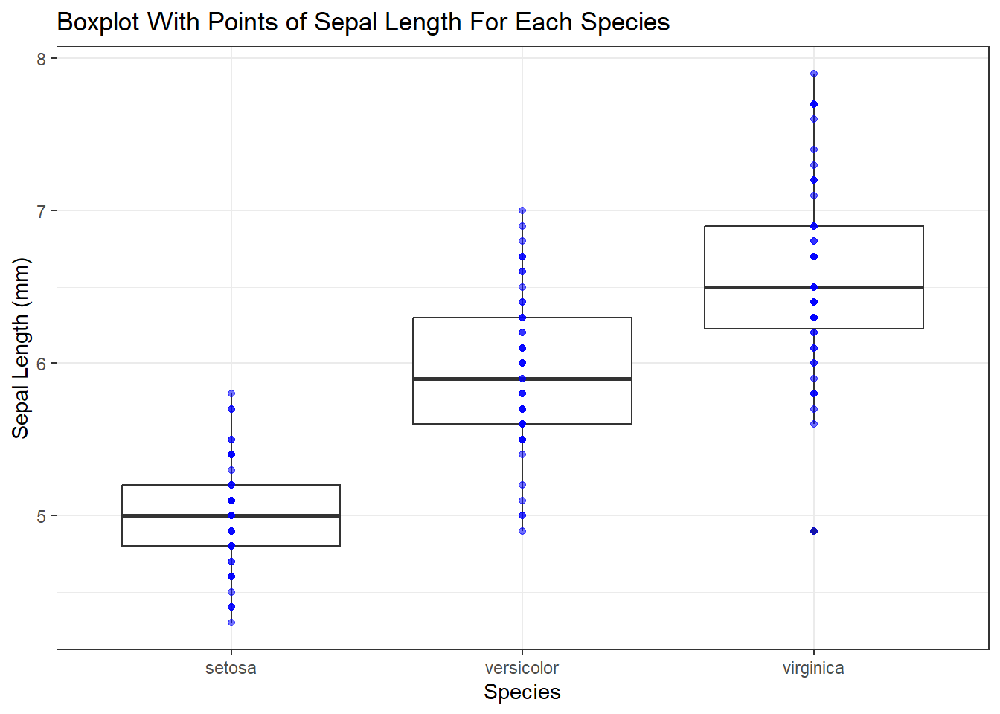
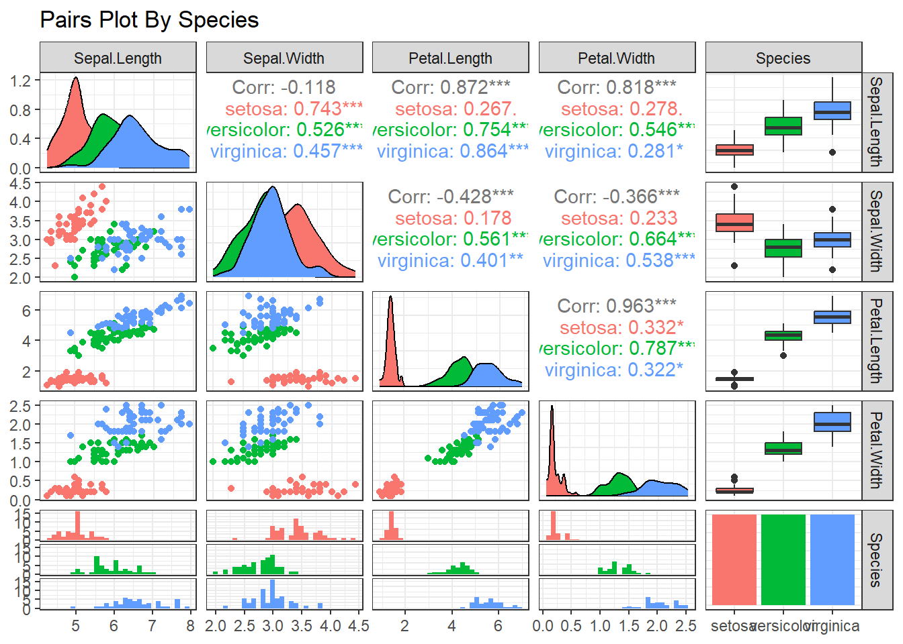

Chapter 3 Introduction
Learning Objectives
To review common descriptive statistics
To review common statistical plots
To perform exploratory data analysis using a spreadsheet
The objective of descriptive statistics is to organise, summarise, and create visual displays of a data set. This process helps guide the inferential stage of statistical analysis.
The descriptive statistics and plots below use the well-known Iris data set. The data set contains measurements of flower parts for three species of Iris.
3.1 Common Descriptive Statistics
Definitions
n - the number of scores
Minimum (min) - lowest score
Maximum (max) - highest score
Quartiles - the scores that break the data into quarters - Q1 25%; Q2 50% (Median); Q3 75%
Mean - the average; sum of scores divided by number of scores
Standard Deviation (sd) - average distance of scores from the mean
When approaching a new data set, a good first step is to determine the data type of each variable (column).
Rows: 150
Columns: 5
$ Sepal.Length <dbl> 5.1, 4.9, 4.7, 4.6, 5.0, 5.4, 4.6, 5.0, 4.4, 4.9, 5.4, 4.…
$ Sepal.Width <dbl> 3.5, 3.0, 3.2, 3.1, 3.6, 3.9, 3.4, 3.4, 2.9, 3.1, 3.7, 3.…
$ Petal.Length <dbl> 1.4, 1.4, 1.3, 1.5, 1.4, 1.7, 1.4, 1.5, 1.4, 1.5, 1.5, 1.…
$ Petal.Width <dbl> 0.2, 0.2, 0.2, 0.2, 0.2, 0.4, 0.3, 0.2, 0.2, 0.1, 0.2, 0.…
$ Species <fct> setosa, setosa, setosa, setosa, setosa, setosa, setosa, s…The output above shows that the Iris data set has five variables, four that are continuous (<dbl>) and one that is qualitative (<fct>). There are 150 records (rows) in the data set.
The following is a summary of descriptive statistics for each quantitative variable in the Iris data set.| Variable | notNA | NA | Mean | SD | Min | Q1 | Q2 (Median) | Q3 | Max |
|---|---|---|---|---|---|---|---|---|---|
| Sepal.Length | 150 | 0 | 5.8 | 0.83 | 4.3 | 5.1 | 5.8 | 6.4 | 7.9 |
| Sepal.Width | 150 | 0 | 3.1 | 0.44 | 2 | 2.8 | 3 | 3.3 | 4.4 |
| Petal.Length | 150 | 0 | 3.8 | 1.8 | 1 | 1.6 | 4.3 | 5.1 | 6.9 |
| Petal.Width | 150 | 0 | 1.2 | 0.76 | 0.1 | 0.3 | 1.3 | 1.8 | 2.5 |
| Variable | notNA | NA | Mean | SD | Min | Q1 | Q2 (Median) | Q3 | Max |
|---|---|---|---|---|---|---|---|---|---|
| Species: setosa | |||||||||
| Sepal.Length | 50 | 0 | 5 | 0.35 | 4.3 | 4.8 | 5 | 5.2 | 5.8 |
| Sepal.Width | 50 | 0 | 3.4 | 0.38 | 2.3 | 3.2 | 3.4 | 3.7 | 4.4 |
| Petal.Length | 50 | 0 | 1.5 | 0.17 | 1 | 1.4 | 1.5 | 1.6 | 1.9 |
| Petal.Width | 50 | 0 | 0.25 | 0.11 | 0.1 | 0.2 | 0.2 | 0.3 | 0.6 |
| Species: versicolor | |||||||||
| Sepal.Length | 50 | 0 | 5.9 | 0.52 | 4.9 | 5.6 | 5.9 | 6.3 | 7 |
| Sepal.Width | 50 | 0 | 2.8 | 0.31 | 2 | 2.5 | 2.8 | 3 | 3.4 |
| Petal.Length | 50 | 0 | 4.3 | 0.47 | 3 | 4 | 4.3 | 4.6 | 5.1 |
| Petal.Width | 50 | 0 | 1.3 | 0.2 | 1 | 1.2 | 1.3 | 1.5 | 1.8 |
| Species: virginica | |||||||||
| Sepal.Length | 50 | 0 | 6.6 | 0.64 | 4.9 | 6.2 | 6.5 | 6.9 | 7.9 |
| Sepal.Width | 50 | 0 | 3 | 0.32 | 2.2 | 2.8 | 3 | 3.2 | 3.8 |
| Petal.Length | 50 | 0 | 5.6 | 0.55 | 4.5 | 5.1 | 5.5 | 5.9 | 6.9 |
| Petal.Width | 50 | 0 | 2 | 0.27 | 1.4 | 1.8 | 2 | 2.3 | 2.5 |
Question
What are some conclusions that you can draw about the data set from the above summary?
Table Formatting For Reports
The previous two tables are examples of tables formatted appropriately for scientific reports. See the APA tables webpage for further details and examples.
3.2 Common Statistical Plots
Visualising data is an important step in finding relationships and patterns. It is also useful for identifying potential problems such as missing data and outliers.
In school we use the word “graph” for visual displays, but statisticians mostly use the word “plot”. Spreadsheets call them “charts”.
3.2.1 Statistical Plot Summary
| Plot | Variables | Uses |
|---|---|---|
| Boxplot | One quantitative variable; one grouping variable | Compares spread within groups; identifies outliers |
| Histogram | One continuous variable | Identifying the population distribution |
| Scatter Plot | Two continuous variables | Identifying relationships between variables e.g. linear, non-linear; identifies outliers |
| Line Plot | One continuous variable; time with regular intervals | Observing change over time |
3.2.2 Boxplot
Boxplots are used to
- show the distribution of data for each quartile of a quantitative variable.
- identify outliers
- compare groups

The following boxplots show the distribution of Sepal Length grouped by species.

Questions
1. What do the thicker black lines inside the boxes represent?
2. What is similar and what is different about the three boxplots? Think in terms of spread and skewness.
3.2.3 Histogram
Histograms are used to help identify the type of distribution from which the data was drawn.

The histograms confirm that the distribution of Sepal.Length is approximately symmetrical for each species. This suggests that a normal distribution might be an appropriate model in each case. Also notice that there is an outlier in the virginica species, as was identified by the boxplot.
3.2.4 Scatter Plot
Scatter plots identify relationships between quantitative variables. If the relationship is linear, it is usually described in terms of the strength of the correlation and the direction of the relationship e.g. “strong positive” or “moderate negative”.

Scatter plots can also include a grouping (qualitative) variable using colour or different point symbols. This can be useful for exploring relationships between groups in the data set.

What extra insights are gained from the grouped plot when compared with the ungrouped plot?
Questions
1. Describe the relationship between Sepal Length and Sepal Width for each species.
2. Draw a line of fit onto each plot. Use this line to estimate the Sepal Width for a Sepal Length of 6.5 for each species.
3.3 Extension: Further Plots
3.3.1 Boxplot With Data Points
Overlaying the data points onto boxplots can provide useful additional information about the spread of the data.

Questions
1. Estimate the mean for each species using the points plot.
2. Do you think there is a constant variance (standard deviation) for the three species?
3. Is there enough evidence in this sample to suggest that the population mean for Sepal Width is different for the three species? Why or why not?
3.3.2 Pairs Plot
A pairs plot shows the relationships between all pairs of variables in a data set. This gives an overall picture of patterns within the data and is a useful tool for guiding research. The following plot includes scatter plots and correlation coefficients for quantitative pairs, boxplots for qualitative-quantitative pairs, and distribution curves for quantitative variables. Each plot has been coloured on the basis of species. To produce this type of plot requires statistical computing software such as R.

Question
1. Which variables show the greatest difference between the three species?
3.4 Exploratory Data Analysis (EDA)
Once the study has been designed and data collected, it’s time to begin exploring the data. This process is known as Exploratory Data Analysis (EDA). The steps of EDA include
- summarising quantitative variables - n, min, max, quartiles, mean, standard deviation
- using boxplots and histograms to investigate spread and skewness
- using scatter plots to investigate associations between quantitative variables
- using grouping variables to investigate the similarities and differences between groups
3.4.1 Activity
- Use the PlantGrowth data set and a spreadsheet to
- Create a summary of the quantitative variable for each group including n, min, max, quantiles, mean, standard deviation
- Create boxplots of the quantitative variable for each group in the data set.
- Create histograms of the quantitative variable for each group in the data set.
- Write a summary of your observations. Can you suggest any hypotheses?
Hint: You will need to reorganise the data so there is one group per column to make some of these plots and summaries in a spreadsheet,
- Repeat the steps of Q.1 using the following two online resources
- Complete a table of pros and cons for each tool.
| Tool | Pros | Cons |
|---|---|---|
| Excel | ||
| Statistics Kingdom | ||
| HHMI |
3.4.2 Solutions
Rows: 30
Columns: 2
$ weight <dbl> 4.17, 5.58, 5.18, 6.11, 4.50, 4.61, 5.17, 4.53, 5.33, 5.14, 4.8…
$ group <fct> ctrl, ctrl, ctrl, ctrl, ctrl, ctrl, ctrl, ctrl, ctrl, ctrl, trt…# A tibble: 3 × 8
group Min Q1 Median_Q2 Q3 Max Mean SD
<fct> <dbl> <dbl> <dbl> <dbl> <dbl> <dbl> <dbl>
1 ctrl 4.17 4.55 5.15 5.29 6.11 5.03 0.583
2 trt1 3.59 4.21 4.55 4.87 6.03 4.66 0.794
3 trt2 4.92 5.27 5.44 5.74 6.31 5.53 0.443

The ctrl group is slightly negatively skewed (Mean = 5.032 versus Median = 5.155). The greatest variation occurs on the trt1 group (SD = 0.79), and the least in the trt2 group (SD = 0.44). The boxplots show that the trt1 group has potential outliers at the upper values.